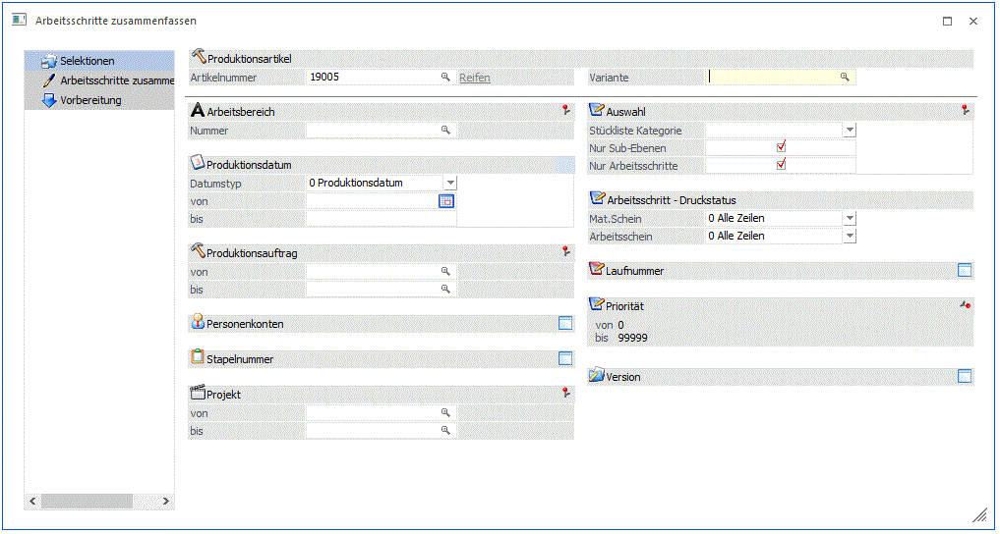

Im ersten Teil des Fensters wird zuerst der Produktionsartikel selektiert, der zusammengefasst werden soll. Zusätzlich kann anhand von verschiedenen Kriterien entschieden werden, welche Produktionsaufträge für das Zusammenfassen berücksichtigt werden sollen.

Produktionsartikelnummer
Ø Artikelnummer
Eingabe der Artikelnummer des Produktionsartikels, der als Arbeitsschritt zusammengefasst werden soll.
Ø Variante
In diesem Feld kann eine entsprechende Variante des Arbeitsschrittes selektiert werden.
Hinweis
Der Variantenmatchcode gilt hier nur für den Arbeitsschritt selbst, nicht für eventuell vorhandene Sub-Arbeitsschritte, die in der Stückliste des Arbeitsschrittes enthalten sind. Wird in diesem Feld keine Selektion getätigt, werden alle vorhandenen Arbeitsschritte mit der angegebenen Artikelnummer im nächsten Schritt vorgeschlagen.
Selektionskriterien für Produktionsaufträge
Ø Arbeitsbereich
An dieser Stelle kann ein zuvor definierter Arbeitsbereich hinterlegt werden.
Hinweis
Mit Hilfe des Arbeitsbereichs können gewisse Einschränkungen, wie z.B. Produktionsauftrag und Produktionsartikel, automatisch vorbelegt werden.
Ø Produktionsdatum
An dieser Stelle kann auf das Produktionsdatum der einzelnen Arbeitsschritte eingegrenzt werden. Es werden nachfolgend nur die Produktionsaufträge berücksichtigt, in deren Zeitraum dieses Datum liegt.
Ø Produktionsauftrag von/bis
Eingabe aus welchem Projektbereich gewählt werden soll. Wird eine Projektnummer eingegeben, dann wird neben dem Eingabefeld der Produktionsartikel als Info angezeigt. Durch einen Klick auf die Bezeichnung kann eine Drill-Down-Funktion ausgelöst werden. Welche Aktion dabei ausgelöst wird, kann über die rechte Maustaste festgelegt werden (die letzte Einstellung wird gespeichert), wobei folgende Optionen zur Verfügung stehen:
ü Produktionsjournal (Projekt:
xxxx)
Die Produktionsinformationsliste wird für den angeführten
Produktionsartikel ausgegeben.
ü Arbeitsschrittstatus (Projekt:
xxxx)
Der Produktionsauftrag wird im Fenster "Arbeitsschrittstatus" geöffnet.
ü Produktionsliste, Komprimierte
Auswertung, Detailauswertung, Diagramm (Projekt: xxxx)
Die
Produktionsinformationsliste wird in der jeweiligen Konfiguration mit einer von
den gewählten Optionen geöffnet.
ü Produktionsauftrag
bearbeiten
Der Produktionsauftrag wird im Fenster "Stückliste bearbeiten"
geöffnet.
Ø Personenkonten von - bis
Einschränkung der Personenkonten, für die Produktionsaufträge bearbeitet werden sollen. Das ist allerdings nur dann sinnvoll, wenn die Produktionsaufträge aus der WinLine FAKT übergeben wurden, bzw. wenn beim Produktionsauftrag auch ein Personenkonto hinterlegt wurde. Wenn eine Einschränkung vorgenommen wird, dann wird neben dem Eingabefeld der Namen des Personenkontos angezeigt. Durch einen Klick auf den Namen kann ein Drill-Down durchgeführt werden. Über die rechte Maustaste kann gesteuert werden, welche Funktion dabei aufgerufen wird (die zuletzt verwendete Option wird gespeichert), wobei folgende Varianten zur Verfügung stehen:
ü Aufruf Info
Es wird das
Personenkonto in der Konteninfo im Programm WinLine INFO geöffnet.
ü Personenkontenstamm
Das
Konto wird in der WinLine FIBU im Personenkontenstamm geöffnet.
ü Statistik
Es wird die
Kundenstatistik in der WinLine FAKT geöffnet.
ü Kontoblatt
Es wird das
Kontoblatt in der WinLine FIBU geöffnet.
ü OP-Blatt
Es wird das OP-Blatt
in der WinLine FIBU geöffnet.
Ø Stapelnummer von - bis
Hier wird auf die dem Produktionsauftrag zugewiesene Stapelnummer eingegrenzt. Es werden nur die Produktionsaufträge berücksichtigt, bei denen eine Stapelnummer hinterlegt ist, die im angegebenen Stapelnummer-Bereich liegt.
Ø Projekt von - bis
Nur Produktionsaufträge, die einem entsprechenden Projekt zugewiesen sind, werden für das Zusammenfassen des Arbeitsschrittes berücksichtigt.
Ø Stückliste Kategorie
Nur Produktionsaufträge mit der selektierten Kategorie werden für das Zusammenfassen berücksichtigt.
Ø Nur Sub-Ebenen
Wenn diese Option aktiviert ist, werden nur Arbeitsschritte berücksichtigt, die als Sub-Ebene in einem Produktionsauftrag vorkommen. Wenn nicht aktiviert, werden auch Produktionsaufträge für den Artikel vorgeschlagen. Auf diese Weise können mehrere Produktionsaufträge für einen Produktionsartikel zu einem neuen Produktionsauftrag zusammengefasst werden. (Achtung: die zusammengefassten Aufträge bleiben als leere Aufträge im System übrig, die ggf. gelöscht werden können).
Ø Nur Arbeitsschritte
Wenn diese Option aktiviert ist, werden nur Produktionsaufträge berücksichtigt, worin der selektierte Arbeitsschritt (noch) als Arbeitsschritt enthalten ist (d.h. der Arbeitsschritt ist für den Produktionsauftrag noch zu produzieren). Wenn die Option deaktiviert ist, werden auch Produktionsaufträge berücksichtigt, worin der Arbeitsschritt schon zusammengefasst wurde (d.h., der Artikel (=Arbeitsschritt) ist als "immer vom Lager" in der Stückliste des Auftrags enthalten). Mit dieser Option kann somit gesteuert werden, ob ein Artikel/Arbeitsschritt mehrmals zu einem neuen Produktionsauftrag zusammengefasst werden.
Arbeitsschritt - Druckstatus
Ø Materialentnahmeschein
Mit den folgenden Optionen können Projekte nach dem Druckstatus des Materialentnahmescheines selektiert werden:
ü 0 Alle Zeilen
Arbeitsschritte
werden unabhängig vom Druckstatus des Materialentnahmescheins vorgeschlagen.
ü 1 muss gedruckt sein
Nur jene
Arbeitsschritte werden vorgeschlagen, für die ein Materialentnahmeschein
gedruckt wurde.
ü 2 darf nicht gedruckt sein
Nur
jene Arbeitsschritte werden vorgeschlagen, für die noch kein
Materialentnahmeschein gedruckt wurde.
Ø Arbeitsschein
Mit den folgenden Optionen können Projekte nach dem Druckstatus des Arbeitsscheines selektiert werden:
ü 0 Alle Zeilen
Arbeitsschritte
werden unabhängig vom Druckstatus des Arbeitsscheins vorgeschlagen.
ü 1 muss gedruckt sein
Nur jene
Arbeitsschritte werden vorgeschlagen, für die ein Arbeitsschein gedruckt wurde.
ü 2 darf nicht gedruckt sein
Nur
jene Arbeitsschritte werden vorgeschlagen, für die noch kein Arbeitsschein
gedruckt wurde.
Ø Laufnummer
Einschränkung der Beleglaufnummer, für die Produktionsaufträge bearbeitet werden sollen. Das ist allerdings nur dann sinnvoll, wenn die Produktionsaufträge aus der WinLine FAKT übergeben wurden, bzw. wenn beim Produktionsauftrag auch ein Beleg hinterlegt wurde.
Ø Priorität von - bis
Nur Produktionsaufträge mit einer Priorität innerhalb des hier angegebenen Bereiches werden für die Bearbeitung berücksichtigt.
Ø Version von - bis
Nur Produktionsaufträge mit einer Version innerhalb des hier angegebenen Bereiches werden für die Bearbeitung berücksichtigt.
Mit einem Klick auf den OK Button oder die F5-Taste werden die Produktionsaufträge gemäß der angegebenen Selektionen im nächsten Schritt für die weitere Bearbeitung angezeigt.